Prime Vandal from VALORANT
November 2025

I wanted more experience with my airbrush, so this project allowed me to have more of it. I experimented with a new brand of paint, Tamiya (the dark silver and silver). It worked quite wonderfully and it was also made easier by the fact that this model is split into many parts and is highly detailed.
To get the green blue metallic look, I mixed "Iridescent green" and "Metallic blue" paints from a generic airbrush paint kit. The first time around I was not happy with the color, so I repained it and it came out much better
As of November 2025, this is the coolest thing I have made. It took me a little over a week, which is longer than I anticipated, but I am happy with the outcome. I learned a lot about mixing paints and cleaning my airbrush by doing this project. With more experience, I would want to attempt to make the orange version from the game (it's my favorite version of the skin, but I also think there are a LOT of other nicer skins)
This model was originally made for the black / gold variant of the prime vandal, and it can be found here by tvonk on Makerworld.
Extra pictures from the design process
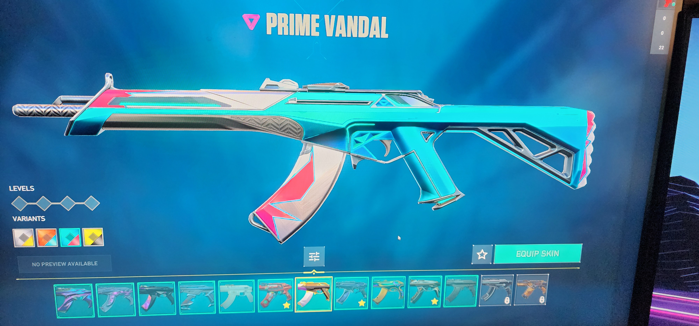
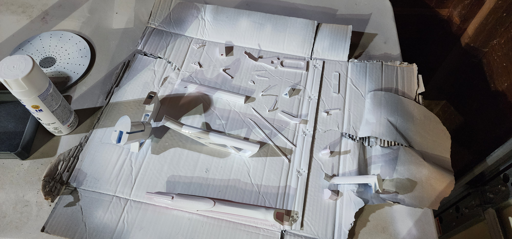
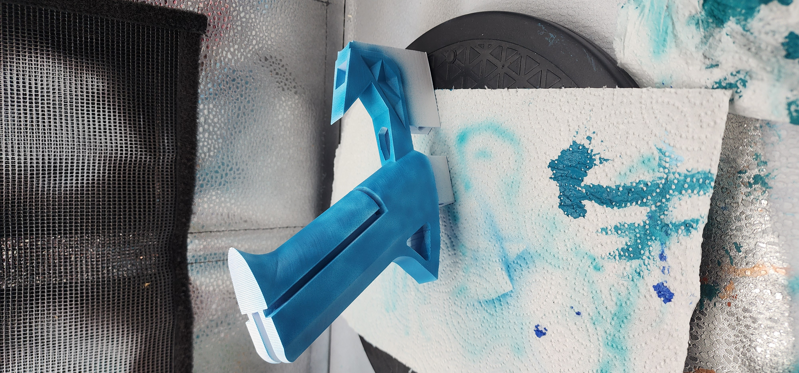
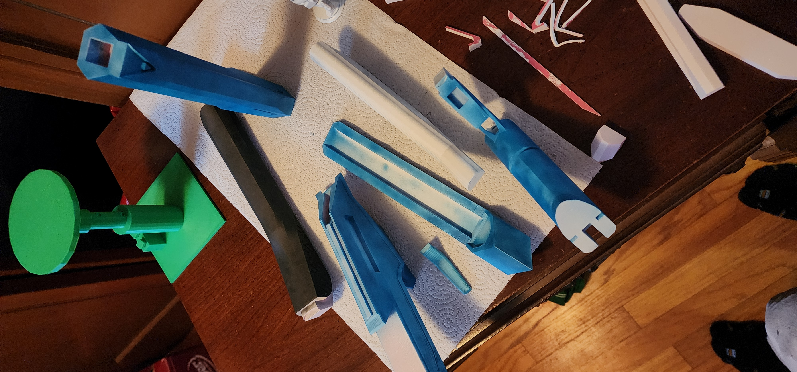
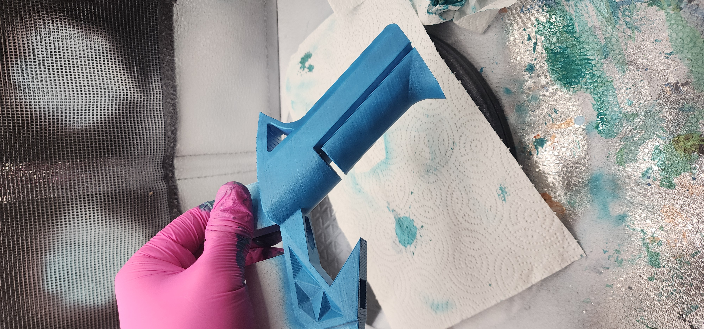
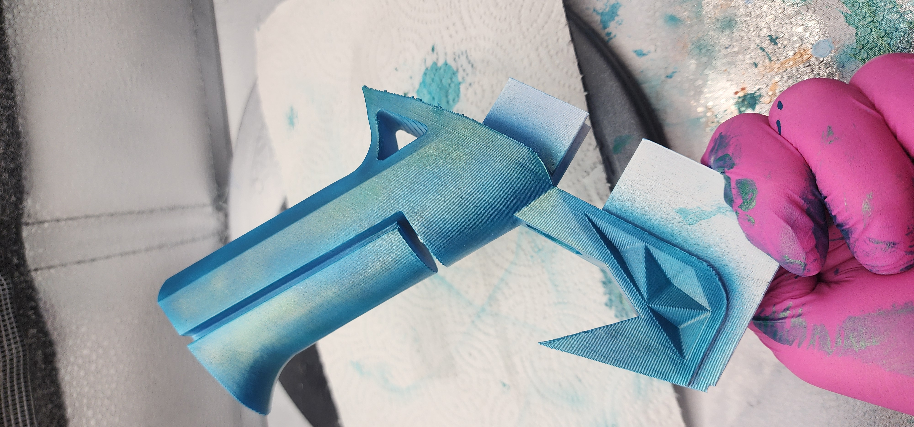
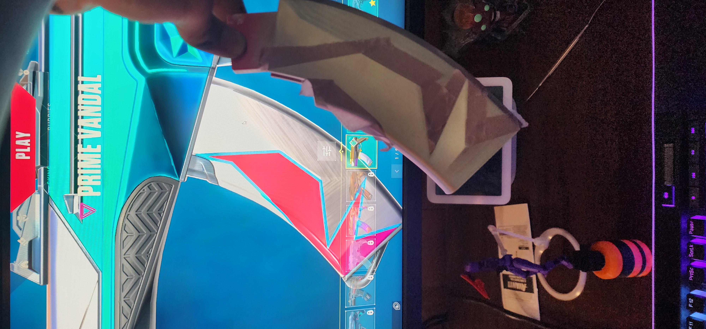
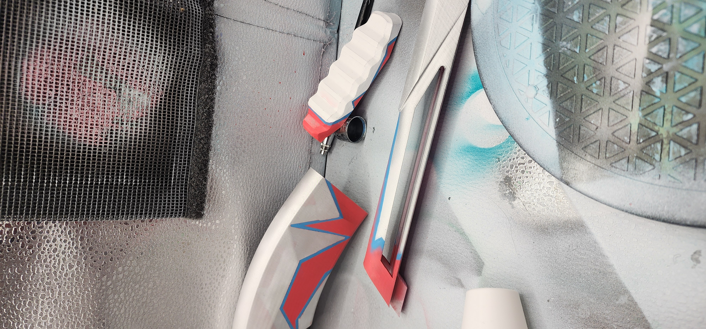
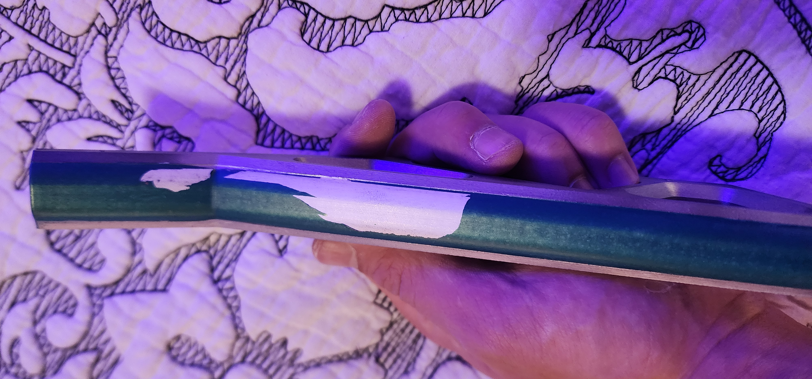
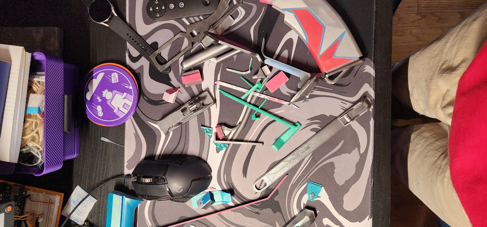
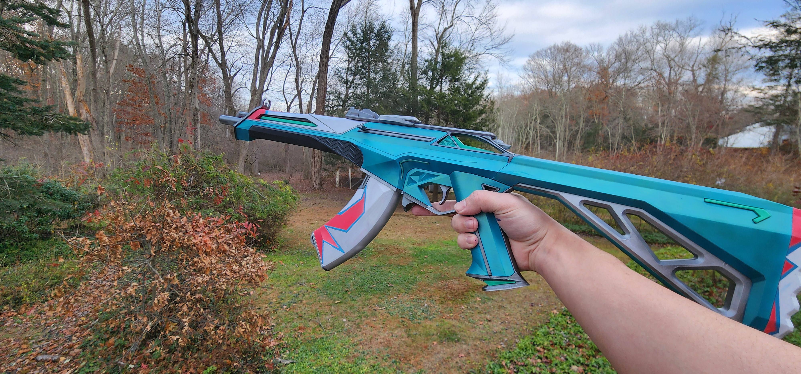